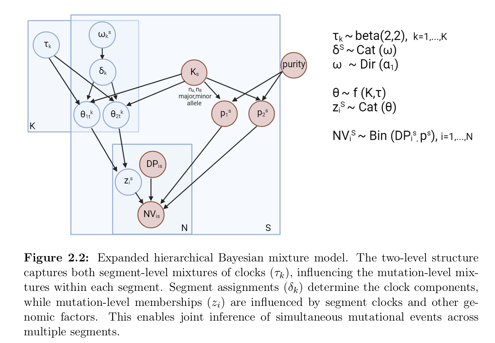

5. Understanding Timing of Multiple Clonal Peaks
a5_Understanding_multiple_segments_timing.RmdThis vignette delves into how the tickTack package
obtains timing results for clonal peaks using the fit_h
function. It explains the underlying processes, including the
computation of clonal peaks and the Stan model used for inference.
Key Components of the Analysis
This function performs hierarchical Bayesian inference using ADVI to
approximate the posterior distributions of clock parameters for copy
number alterations (CNAs). It iteratively fits models with different
numbers of components (up to k_max), computes posterior
summaries, and logs ELBO (Evidence Lower Bound) values for each fit.
The input data are: - x list: A CNAqc object containing
mutation and CNA data. - max_attempts num: Maximum number of repeated
inference attempts for ADVI. - INIT logical: Whether to perform
initialization of parameters. - tolerance num: Tolerance level for ELBO
optimization. - possible_k chr: Possible karyotype configurations (e.g.,
"2:1", "2:2", "2:0"). - alpha
num: Confidence interval level for binomial filtering. -
min_mutations_number num: Minimum number of mutations required for a
segment to be included in inference. - n_components num: Number of
components specified by the user (overrides automatic
determination).
It returns a list containing processed input data, posterior draws, ELBO iterations, and other inference results.
Steps of the fit_h Function
Step 1: Validate Input Data
- Extract mutation and CNA data from the
CNAqcobject. - Ensure both mutations and CNA data are non-empty. If empty, the function terminates with an error.
Step 2: Prepare Input Data
- Use
prepare_input_datato filter and format mutation and CNA data based on the provided karyotypes (possible_k), confidence intervals (alpha), and minimum mutations per segment (min_mutations_number). - Extract
accepted_cnaandinput_datafor inference.
Step 3: Determine Maximum Number of Components
(k_max)
- If
n_componentsis not provided, calculatek_maxbased on the number of segments (S) using predefined rules.
Step 4: Iterative Inference for Each Component Count
(K)
For each K from 1 to k_max: - Add
K to the input_data. - If INIT is
enabled, initialize parameters using get_initialization. -
Fit the model using fit_variational_h with ADVI. - Extract
relevant posterior variables (tau and w) and
compute summaries. - Compute clock assignments for segments using
compute_clock_assignment. - Store results, including
posterior summaries and clock assignments.
The model to fit is described by the following probabilistic
graphical model.

The model estimates the posterior distribution of tau
and weights , which represents the timing of clonal
expansions.
The stan code used for the model is divided in the following pieces.
Data block
data {
// input the karyotyoe to specify the formula for theta
int S; // number of segments
int K; // clocks
int N; // total number of mutations
array[S] int karyotype; // list of karyotype associated wit the segments
array[N] int seg_assignment; // segment_id assignment to the mutations
array[S,2] real peaks; //for each segment, S vectors of dim 2
array[N] int NV; // for all the segments
array[N] int DP;
}Transformed parameters block
transformed parameters{
array[S] vector[K] perturbed_w; // Pesi perturbati e rinormalizzati
real<lower=0> epsilon;
epsilon = 0.01;
for (s in 1:S) {
for (k in 1:K) {
if (w[s][k] > 0.5) {
perturbed_w[s][k] = w[s][k] - epsilon;
} else {
perturbed_w[s][k] = w[s][k] + epsilon;
}
}
// Rinormalizza i pesi
perturbed_w[s] = perturbed_w[s] / sum(perturbed_w[s]);
}
array[S,K,2] real<lower=0,upper=1> theta; //binomial mixing proportions // array[S,K] simplex[2] theta;
for (s in 1:S){
for (k in 1:K){
if (karyotype[s] == 1) {
theta[s,k,1] = (3 - 2*tau[k]) / (3 - tau[k]); // 2:1
theta[s,k,2] = tau[k] / (3 - tau[k]);
}
else {
theta[s,k,1] = (2 - 2*tau[k]) / (2 - tau[k]); // 2:0 - 2:2
theta[s,k,2] = tau[k]/(2 - tau[k]);
}
}
}
vector[K] alpha = kappa * phi;
}Model block
model {
vector[K*2] contributions; //real contributions[K * 2]; // Array to hold contributions for log_sum_exp
// priors
phi ~ dirichlet(rep_vector(1.0, K));;
kappa ~ gamma(2, 0.5); // strictly positive with a long right tail.
// phi = expected value of w, kappa (minus K) = concentrazione della distribuzione / strength of the prior mean measured in number of prior observations.
for (s in 1:S){
w[s] ~ dirichlet(alpha);
}
for (k in 1:K) {
tau[k] ~ beta(2,2); // Beta prior for tau
}
//likelihood
for (i in 1:N) {
int c = 1;
for (k in 1:K) {
for (j in 1:2) {
real contribution = log(perturbed_w[seg_assignment[i], k]) +
log(theta[seg_assignment[i], k, j]) +
binomial_lpmf(NV[i] | DP[i], peaks[seg_assignment[i], j]);
contributions[c] = contribution;
c += 1;
}
}
target += log_sum_exp(contributions);
}
}The model block contains three components:
Prior: The line
tau[k] ~ beta(2,2)applies a Beta prior to the components’ values. The linew[s] ~ dirichlet(alpha);applies a Dirichlet prior to the mixture probabilities that depends on alpha = phi * kappa. This means that we do not a priori favor one clock component over the other unless there is data evidence. The linesphi ~ dirichlet(rep_vector(1.0, K));andkappa ~ gamma(2, 0.5);apply the priors to the reparametrization values for the alpha parameter of the weights.Likelihood: The likelihood is computed using the
binomial_lpmf(NV[i] | DP[i], peaks[seg_assignment[i], j])(or the Negative binomial). This term computes the probability of observingNV[i]variant reads given sequencing depthDP[i]and a given theoretical clonal peak valuepeaks[k].Marginalization: The line
log_sum_exp(contributions)computes the log marginal likelihood by summing over possible contributions (karyotypes) using the softmax approach, allowing the model to integrate over possible karyotype contributions (omega).
Generated quantities
generated quantities {
//array[N] vector[K*2] log_lik_matrix;
vector[N] log_lik; // log-likelihood for each data point
for (i in 1:N) {
vector[K*2] contributions;
int c = 1;
for (k in 1:K) {
for (j in 1:2) {
contributions[c] = log(w[seg_assignment[i],k]) + log(theta[seg_assignment[i],k,j]) + binomial_lpmf(NV[i] | DP[i], peaks[seg_assignment[i],j]);
c += 1;
}
}
log_lik[i] = log_sum_exp(contributions);
//log_lik_matrix[i] = contributions;
}
}Step 5: Log ELBO Iterations
- Extract ELBO values from the output files of the model fit and save
them for each
K.
Step 6: Compile Results
- Store posterior draws, summaries, log-likelihood contributions, and
ELBO iterations in lists for each
K. - Return the compiled results as a list:
-
data: Processed input data. -
draws_and_summary: Posterior draws and summaries for eachK. -
log_lik_matrix_list: Log-likelihood matrices for eachK. -
elbo_iterations: ELBO iteration data for eachK.
-